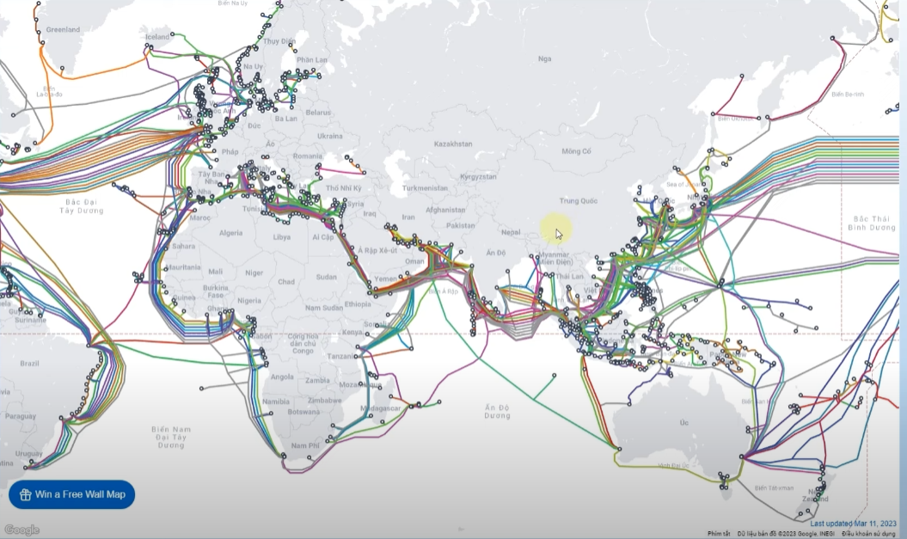

- Internet là một mạng lưới toàn cầu kết nối hàng tỷ thiết bị máy tính trên toàn thế giới
- Đây là hình ảnh tuyến cáp quang trên thế giới 
- Các thiết bị điện tử của chúng ta như tivi. máy tính, lattop, điện thoại..v.v được kết nối qua internet thông qua máy chủ sever
- Máy chủ sever là nơi lưu trữ dữ liệu để truy cập từ các thiết bị điện tử khác thông qua internet, đây là hình ảnh minh họa:
- Mỗi một thiết bị khi tham gia vào internet đều có địa chỉ ip là để xác định vị trí chúng ta đang ở đâu trên mạng internet khi chúng ta truy cập vào địa chỉ nao đó thì cũng có địa chỉ ip đây là hình ảnh minh họa
- Trang wed check ip: https://www.nslookup.io/website-to-ip-lookup/ hoăc có thể lên google viêt: check ip domain
- Ngôn ngữ mà lập trình wed có thể hiểu: html, js, css dưới đây là hình ảnh minh họa
Địa chỉ truy cập các tuyến cáp quang: http://submarinecablemap.com